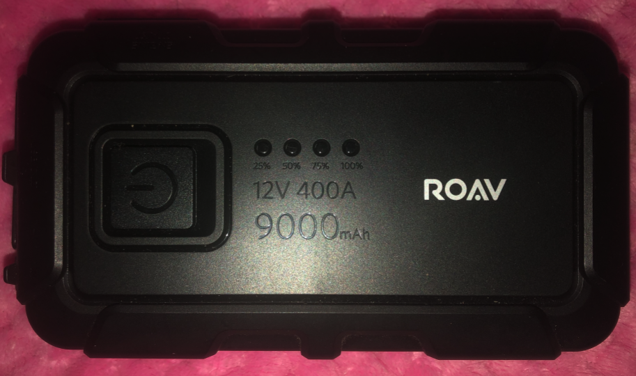

Información general proyecto
Recursos empleados
- Raspberry Pi 4 de 2GB RAM
- Alimentación (5V - 3A) - Puerto USB-C
- Raspberry PI OS Full (32-bit) -> Debian
- Raspberry Desktop
- GNU Octave
- libv4l-dev libfltk1.3-dev libsvm liboctave-dev
- Image Acquisition Toolbox
- libbcm2835 - GPIO
- Html JavaScript CSS jQuery
Montaje de dispositivo interno
Raspberry + Componentes
Encapsulado de los componentes
Montaje de dispositivo externo
Vista frontal
Soporte
Bateria de consumo
Bateria
- Input: 15V-1A
- Output-USB: 5V -3A
- Capacidad: 9000mAh/33.3Wh
Consumo
- Raspberry ≈ 15W
- Disipador ≈ 10W
- Led + Resistencia ≈ 0.1W
- 25Wh < 33.Wh
Presupuesto
Los precios son referenciales debido a que se ocupo el valor del dolar, que varía a diario y adicionalmente,
en los componentes que lo requirian, se incluyó preio del envío.
Los componentes restantes se utilizaran los del laboratorio.